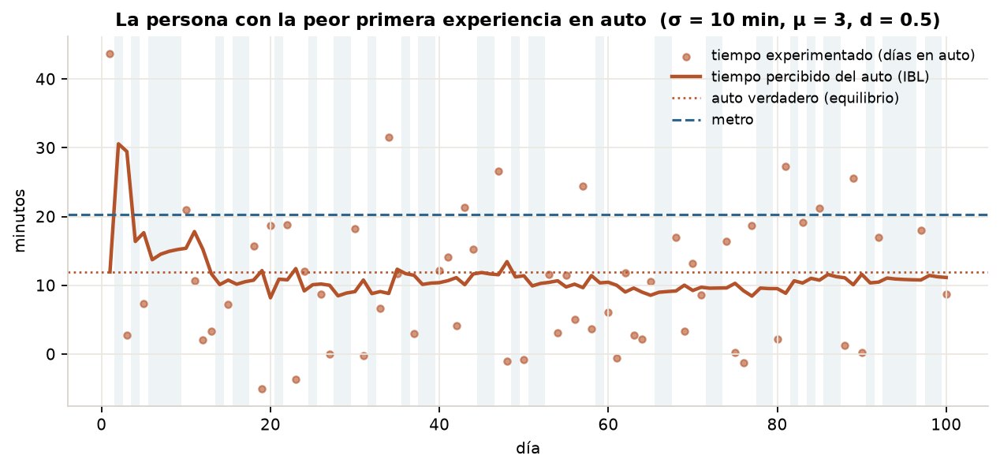
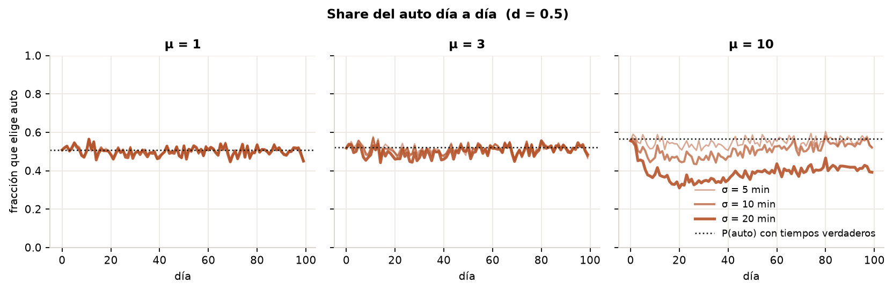
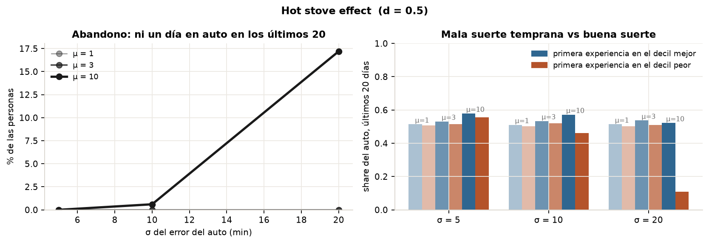
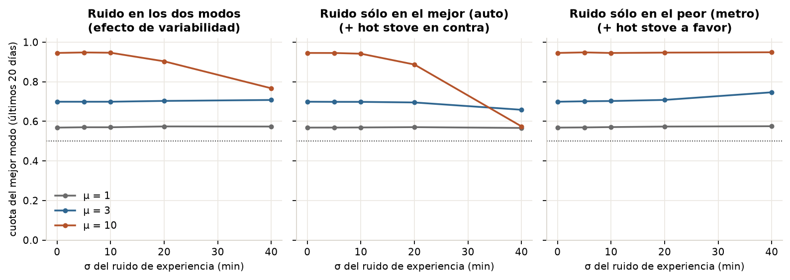
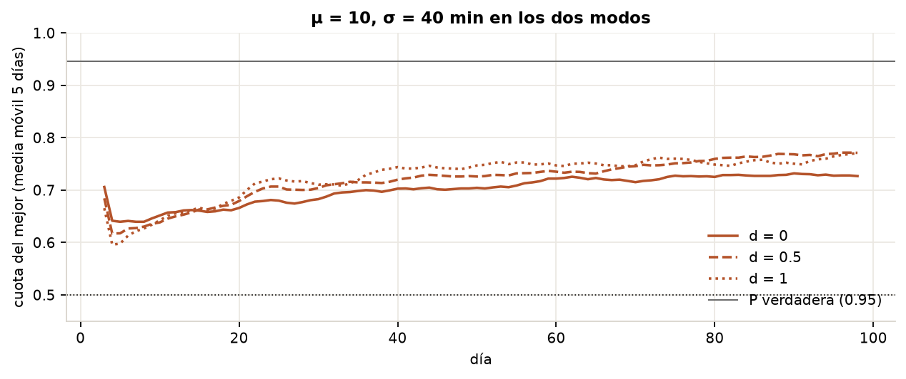
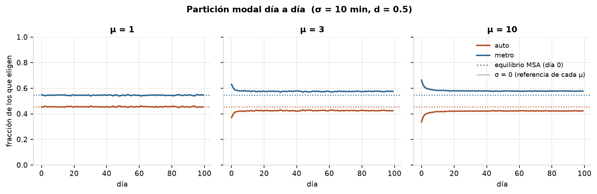
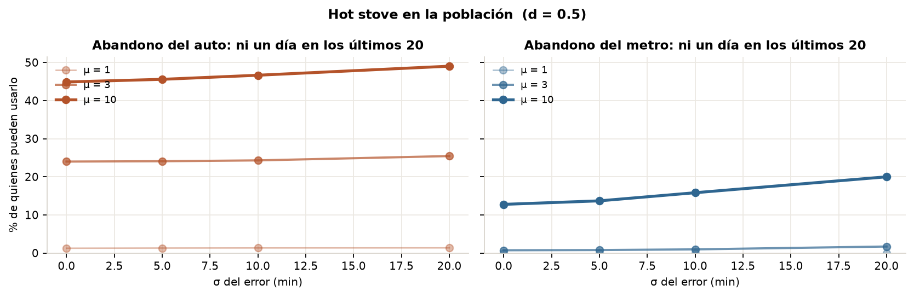
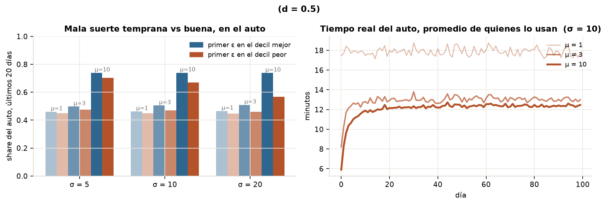
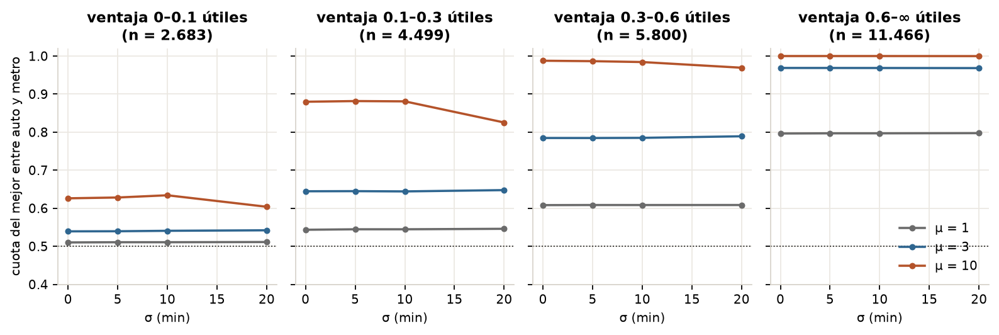

Un simulador paralelo al MSA: en vez de resolver un punto fijo, la gente elige cada día con el tiempo que cree que tarda cada modo, lo experimenta con un error propio, y aprende por instancias (IBL). Se buscan dos efectos del aprendizaje con ruido: el hot stove effect y el efecto de variabilidad del pago.
El simulador resuelve la partición modal como un punto fijo:
el MSA itera hasta que los tiempos de la BPR y el logit son consistentes. No
hay días, ni memoria, ni experiencia. El documento
(new_simulator/IBL Leandro.docx) pide reemplazar eso por una
dinámica día a día:
Es un modelo de dinámica y no de equilibrio; ese cambio de naturaleza ordena todo lo demás. Se construyó en fases, cada una verificable sola, como sandbox que reutiliza el núcleo sin tocarlo. La columna unidad de análisis importa para leer cada número: una persona repetida muchas veces no es una población.
| fase | archivo | unidad de análisis | qué hace |
|---|---|---|---|
| IBL | ibl.py · test_ibl.py | — | Las ecuaciones (1) y (2), vectorizadas, con seis tests de respuesta conocida. |
| 0 | persona.py | una persona · 500 réplicas | Una persona elige entre auto y metro 100 días, con tiempos verdaderos fijos (los del equilibrio MSA en su celda) y ruido sólo sobre el auto. Caso en la indiferencia. |
| 0-b | pve.py | una persona · 500 réplicas | Lo mismo con un caso donde el auto gana claramente en media, y ruido en los dos modos, en uno o en el otro. Mide el efecto de variabilidad del pago. |
| 1 | poblacion.py | población · 28.982 agentes | Todos los agentes del equilibrio MSA eligen cada día entre auto y metro —todos tienen auto—; los flujos cargan la red (resolver_oferta); ruido sobre los dos modos. 100 días. |
Una persona · 500 réplicas: la misma persona, con los mismos parámetros, 500 veces, cada una con su propia secuencia de ruido. No hay interacción entre réplicas; los promedios describen la conducta esperada de esa persona. Población: personas distintas (celda, estrato, auto), todas a la vez, acopladas por la congestión; los promedios son sobre agentes.
El modelo tiene tres fuentes de aleatoriedad distintas, y los efectos que se buscan dependen de cuál domina. Conviene nombrarlas antes de mirar números.
| ruido | parámetro | qué es | se aprende |
|---|---|---|---|
| De la elección | El término Gumbel del logit, (6): cada día la persona elige con un sorteo alrededor de lo que cree. Su desviación estándar sobre la diferencia de utilidades es : 1,81 útiles con , 0,18 con . | no | |
| De la experiencia | El error con que se vive el tiempo de un viaje, (4). Es lo que el IBL promedia. | sí | |
| Del muestreo | Qué modos se observan: sólo se aprende del modo que se usó. No es un parámetro, es consecuencia de las elecciones. | — |
Con esas tres piezas, el aprendizaje con ruido produce dos efectos que la literatura de decisiones desde la experiencia distingue:
Una alternativa que da una mala experiencia se subestima y deja de elegirse, así que su estimación no se corrige; una que se sobrestima se sigue eligiendo y la experiencia la corrige. Es una asimetría del muestreo: los errores a la baja persisten y los al alza no. Su consecuencia es un sesgo contra la alternativa de resultados variables —aprender produce aversión al riesgo—. El abandono (no volver a probar) es su forma extrema; la pérdida de cuota sin abandono es su forma débil. Es el mismo mecanismo.
Al aumentar la varianza de los pagos manteniendo sus medias, la elección se vuelve más aleatoria: la cuota de la alternativa mejor en media se acerca a ½. Está documentado en experimentos de elección repetida con retroalimentación (Erev y Barron, 2005, lo revisan junto con el hot stove). En el IBL tiene un mecanismo concreto: la creencia es un promedio de pocas experiencias ruidosas, y si su ruido supera la diferencia de medias, elegir por ella se parece a tirar una moneda. Requiere ruido en las dos alternativas; con ruido en una sola se mezcla con el hot stove.
En ibl.py se implementan tal cual, sobre matrices (personas, días, modos).
El documento no lo dice. Si la persona nunca eligió i, la suma de (2) es vacía y la fórmula da 0/0. Se resuelve tratando la información exógena del día 1 como una instancia más:
con el tiempo del equilibrio MSA en la celda de la persona.
Así el prior decae con como cualquier experiencia y queda
definido siempre. Es un supuesto; lo fija
test_un_modo_nunca_elegido_da_peso_cero_no_nan. Tiene una
consecuencia que se ve en la fase 0-b: el prior pesa lo mismo que
una experiencia, así que el primer viaje con mucho ruido mueve la
creencia a la mitad del camino.
es el tiempo verdadero del modo ese día: fijo en las fases 0 y 0-b, el de la red congestionada en la fase 1. El error es i.i.d. por persona y día, con media cero, como pide el documento. No se trunca: ni en el flujo libre ni en cero. Es ruido de percepción; con σ grande una experiencia puede salir negativa, y no es un tiempo físico, pero la creencia (1), que promedia varias experiencias, se mantiene positiva.
La razón es que truncar hace que el ruido deje de preservar la media: sube el tiempo medio vivido, y más en el modo con el tiempo verdadero más corto. Con σ comparable a eso se confunde exactamente con los efectos que se buscan. Hasta el 15-sep el informe truncaba primero en el flujo libre («cree que el auto es peor» ≈ 100 % en las 27 combinaciones, un artefacto) y después en cero, que seguía sesgando:
| caso | μ, σ | medida | truncando en 0 | sin truncar |
|---|---|---|---|---|
| fase 0 · una persona | 10, 20 | cuota final del auto | 0,255 | 0,417 |
| fase 0 · una persona | 10, 20 | abandono | 20,0 % | 17,2 % |
| fase 0 · una persona | 10, 20 | cuota final · mala / buena suerte | 0,07 / 0,29 | 0,11 / 0,52 |
| fase 0 · una persona | 1, 20 | cuota final del auto (verdadera 0,507) | 0,477 | 0,503 |
| fase 0-b · una persona | 10, 40 | cuota del mejor, ruido en los dos | 0,854 | 0,767 |
| fase 1 · población | 1, 20 | Δ cuota del auto · Δ bienestar | +1,1 pp · −0,026 | 0,0 pp · 0,001 |
| fase 1 · población | 10, 20 | Δ abandono del metro | +5,3 pp | +7,2 pp |
d = 0,5. De salida/truncamiento.json (sensibilidad.py).
Truncando, la fase 0 exageraba el hot stove, la fase 0-b escondía parte del
efecto de variabilidad y la fase 1 inventaba un traspaso del metro al auto
y una pérdida de bienestar que no existen.
La utilidad de cada modo la calcula calcular_utilidades, la del
simulador, y es lineal en el tiempo de viaje. Se la llama
una vez con los tiempos de referencia, y la de cada persona cada día es
b_tiempo_viaje del estrato, −0,0331 útiles/min.probabilidades_logit. Se barre porque decide si los efectos se ven: en la figura 6.b del paper de Henríquez-Jara y Guevara la elección es casi determinista ().Todo lo que cambia día a día vive en . En la fase 0 se llama al núcleo por día; en las fases 0-b y 1 se usa (5), que da lo mismo y es vectorizable (en la fase 1, una llamada por grupo estrato × celda × auto: 1.108 grupos).
Auto: sobre el tiempo total. Metro (fases 0-b y 1): sobre el tiempo en vehículo, que es el que pesa ; espera y acceso quedan en . En las tres fases se elige sólo entre auto y metro, los dos con ruido; bici y caminata no participan. Teletrabajadores fuera: no eligen.
una persona · 500 réplicas · auto contra metro · ruido sólo sobre el auto · 100 días
La persona es del estrato Medio y vive a 5,8 km del CBD (celda 158), con auto disponible. La ciudad se usa una sola vez: se corre el MSA de la app y se toman los tiempos de equilibrio en esa celda —auto 12,0 min, metro 20,3 min—. Después se simula a esa persona aislada: elige entre auto y metro durante 100 días, con tiempos verdaderos fijos —no hay congestión, lo que ella elige no afecta a nadie—. El metro no tiene ruido: siempre tarda lo mismo. El auto tarda su tiempo verdadero más . Es el montaje clásico del hot stove: una alternativa segura contra una variable.
Cada día la persona recuerda (1)–(3), evalúa (5), sortea con el logit (6) y, si fue en auto, agrega a su memoria el tiempo que vivió (4); si fue en metro, agrega el del metro, que es el de siempre. Réplicas: una persona sola es una trayectoria de azar, así que se simula 500 veces la misma persona, con los mismos parámetros y distinto ruido. Las réplicas no interactúan; los promedios describen su conducta esperada, no una población. Barrido: σ ∈ {5, 10, 20} min, μ ∈ {1, 3, 10}, d ∈ {0; 0,5; 1}.
El caso se eligió buscando dónde auto y metro compiten. La primera corrida, descartada, fue el estrato Alto a 5 km del CBD: auto 10,4 min, metro 25,7. Ahí el auto gana por 1,2 útiles, que a son 36 minutos equivalentes, y ningún shock razonable lo da vuelta: hot stove cero. Se barrieron celdas y estratos:
| estrato | km | auto (min) | metro (min) | Vauto | Vmetro | ventaja del auto |
|---|---|---|---|---|---|---|
| Alto | 5,0 | 10,4 | 25,7 | −0,635 | −1,837 | +36 min eq. |
| Medio | 5,8 | 12,0 | 20,3 | −1,355 | −1,382 | +0,8 min eq. |
| Bajo | 1,2 | 2,8 | 19,7 | −1,540 | −1,632 | +2,8 min eq. |
Tiempos del equilibrio MSA de la app, sólo auto y metro habilitados. El caso elegido (destacado) es el Medio a 5,8 km: , indiferencia casi exacta. Por la misma razón este caso no sirve para el efecto de variabilidad: ya está en ½. Para eso está la fase 0-b.
Todas son medidas sobre una persona, promediadas sobre sus 500 réplicas:

| σ (min) | μ | P(auto) verdadera | cuota final | abandono | final · mala suerte | final · buena suerte |
|---|---|---|---|---|---|---|
| 5 | 1 | 0,507 | 0,504 | 0,0 % | 0,51 | 0,51 |
| 5 | 10 | 0,567 | 0,562 | 0,0 % | 0,56 | 0,58 |
| 10 | 1 | 0,507 | 0,504 | 0,0 % | 0,50 | 0,51 |
| 10 | 10 | 0,567 | 0,544 | 0,6 % | 0,46 | 0,57 |
| 20 | 1 | 0,507 | 0,503 | 0,0 % | 0,50 | 0,51 |
| 20 | 3 | 0,520 | 0,520 | 0,0 % | 0,51 | 0,54 |
| 20 | 10 | 0,567 | 0,417 | 17,2 % | 0,11 | 0,52 |
Una persona, 500 réplicas, d = 0,5. Las 27 combinaciones están en
salida/persona.json. Con σ = 20 y μ = 10 el abandono va de
14,0 % (d = 0) a 20,6 % (d = 1).


Con la escala del logit del simulador () el aprendizaje es autocorrectivo: una mala percepción baja la probabilidad del auto, pero no la anula, la persona lo vuelve a probar y la percepción se arregla. Para que una mala percepción bloquee la exploración, el ruido de la elección tiene que ser chico frente al error de la creencia, y eso pasa recién con , el orden de la figura del paper. Es una decisión de calibración, no un hecho del modelo, y hay que declararla al presentar cualquier número.
una persona · 500 réplicas · auto contra metro · ruido en los dos, en uno o en el otro · 100 días
¿Si aumenta la varianza del tiempo, la elección se vuelve más aleatoria, con la cuota hacia ½? Con la fase 0 no se puede responder, por dos razones de diseño: el caso ya está en la indiferencia (no hay recorrido hacia ½), y el ruido está en un solo modo (mezcla el efecto con el hot stove).
La fase 0-b tiene la misma mecánica que la fase 0 —una persona, tiempos verdaderos fijos, sin congestión, 500 réplicas— con dos cambios. Otro caso: el estrato Medio a 4,5 km (celda 145), auto 9,4 min, metro 19,5 min; el auto gana por 0,285 útiles (8,6 min equivalentes), así que la cuota verdadera queda en 0,57 / 0,70 / 0,95 con μ = 1 / 3 / 10, lejos de ½. Tres condiciones de ruido, con σ de 0 a 40 min: en los dos modos con el mismo σ —la prueba limpia: las medias no cambian, sólo la varianza—; sólo en el mejor —se suma el hot stove en contra—; sólo en el peor —el hot stove juega a favor—. El ruido del metro va sobre su tiempo en vehículo. La medida es la cuota del mejor:
| ruido en | μ | P verdadera | σ = 0 | σ = 5 | σ = 10 | σ = 20 | σ = 40 |
|---|---|---|---|---|---|---|---|
| los dos | 1 | 0,571 | 0,568 | 0,570 | 0,570 | 0,574 | 0,574 |
| los dos | 3 | 0,702 | 0,699 | 0,699 | 0,699 | 0,703 | 0,708 |
| los dos | 10 | 0,945 | 0,945 | 0,948 | 0,946 | 0,903 | 0,767 |
| sólo el mejor | 1 | 0,571 | 0,568 | 0,568 | 0,569 | 0,570 | 0,567 |
| sólo el mejor | 3 | 0,702 | 0,699 | 0,698 | 0,698 | 0,695 | 0,658 |
| sólo el mejor | 10 | 0,945 | 0,945 | 0,945 | 0,942 | 0,887 | 0,574 |
| sólo el peor | 1 | 0,571 | 0,568 | 0,569 | 0,571 | 0,574 | 0,575 |
| sólo el peor | 3 | 0,702 | 0,699 | 0,701 | 0,703 | 0,708 | 0,747 |
| sólo el peor | 10 | 0,945 | 0,945 | 0,948 | 0,945 | 0,947 | 0,949 |
Cuota del mejor (7), una persona, 500 réplicas, d = 0,5, últimos 20 días.
Las 135 combinaciones (con d = 0 y d = 1) están en salida/pve.json.


Con la calibración vigente (μ = 1) no se observa. El logit ya reparte la elección con un ruido de 1,81 útiles (), y el ruido que el aprendizaje agrega a la creencia es de décimas de útil: con ~50 experiencias y σ = 40, útiles por modo. Sumado a un ruido diez veces mayor, no se nota: la cuota queda en la verdadera en las tres condiciones.
Con una elección casi determinista (μ = 10) sí se observa: el ruido del logit baja a 0,18 útiles, del orden del de la creencia, y la cuota del mejor cae de 0,95 a 0,77 con σ = 40. Es en buena parte transitorio (fig. 08): la creencia promedia cada vez más experiencias y su ruido baja como .
El hot stove se suma o se resta según dónde esté el ruido. Con ruido sólo en el mejor, los dos efectos empujan hacia abajo; con ruido sólo en el peor, el hot stove empuja hacia el mejor y compensa. Con ruido en los dos, el hot stove actúa sobre ambos y queda el efecto de variabilidad casi solo.
población · 28.982 agentes · todos con auto · auto contra metro · ruido en los dos · congestión endógena · 100 días
Aquí sí está la ciudad entera. Son todas las personas del
equilibrio, cada una con su celda y su estrato, que aprenden a la vez. Cada
día todas eligen con sus propias percepciones; con los viajes de ese día se
recalcula la red con el mismo código que usa el MSA
(resolver_oferta: la BPR del auto y la frecuencia del metro), y
cada persona vive el tiempo real de su modo en su celda más su propio
. El tiempo verdadero de (4) cambia
día a día según lo que eligieron los demás. No hay réplicas: es una
sola corrida, y las cuotas son fracciones de agentes (o de
sus viajes). Barrido: σ ∈ {0, 5, 10, 20}, μ ∈ {1, 3, 10}, d ∈ {0; 0,5; 1}.
La ciudad de esta fase no es la de la app. Para que cada persona elija entre los mismos dos modos que en las fases 0 y 0-b, se cambiaron dos cosas: todos tienen auto ( en los tres estratos) y sólo auto y metro están habilitados. Los tiempos del día 0 y la población salen del equilibrio MSA de esa ciudad, con localización de equilibrio: auto 45,3 % y metro 54,7 % de los que eligen. Quienes viven a menos de 1 km del CBD no tienen metro (D-69) y sólo pueden ir en auto: 4.534 de los 28.982. Cargan la red, pero no eligen, y quedan fuera de las medidas que comparan los dos modos. Hasta el 30-sep-2026 esta fase usaba la ciudad de la app, con cuatro modos y bici y caminata sin ruido: eran un refugio hacia el que migraba la elección por construcción.
Sin ruido y con el logit del núcleo, el loop día a día reproduce la partición del MSA de esta ciudad: auto 45,5 % contra 45,3 %, metro 54,5 % contra 54,7 %. El acoplamiento IBL + oferta tiene al punto fijo del simulador como caso particular.
Cambiar cambia el modelo de elección, y por lo tanto su equilibrio: con y sin ruido el auto baja a 42,3 % y su tiempo real de 17,8 a 12,4 min: el logit nítido manda al metro a todos los que lo prefieren por poco, y el auto se descongestiona. Comparar contra el MSA mezclaría ese efecto con el del aprendizaje. Por eso la referencia de cada μ es la misma dinámica con σ = 0, y los efectos se miden como delta respecto de ella.
| μ | auto (σ = 0) | metro (σ = 0) | abandono auto | abandono metro | t real del auto |
|---|---|---|---|---|---|
| 1 | 45,5 % | 54,5 % | 1,3 % | 0,0 % | 17,8 min |
| 3 | 42,5 % | 57,5 % | 24,0 % | 0,7 % | 13,0 min |
| 10 | 42,3 % | 57,7 % | 44,9 % | 12,8 % | 12,4 min |
Población, σ = 0, d = 0,5, últimos 20 días. «Abandono»: fracción de los agentes que pueden usar el modo y no lo usaron ni un día en los últimos 20. Con σ = 0 no es hot stove: es gente que con un logit nítido nunca elige el modo que le conviene menos. Lo que cuenta es cuánto sube con σ.

| σ | μ | Δ cuota auto | Δ abandono auto | Δ abandono metro | auto final · mala vs buena suerte | metro final · mala vs buena suerte | Δ bienestar |
|---|---|---|---|---|---|---|---|
| 10 | 1 | 0,0 pp | +0,1 pp | 0,0 pp | 0,45 vs 0,46 | 0,65 vs 0,66 | 0,0005 |
| 10 | 3 | 0,0 pp | +0,3 pp | +0,2 pp | 0,47 vs 0,50 | 0,68 vs 0,69 | 0,0002 |
| 10 | 10 | 0,0 pp | +1,8 pp | +3,1 pp | 0,67 vs 0,74 | 0,71 vs 0,76 | 0,0000 |
| 20 | 1 | 0,0 pp | +0,1 pp | 0,0 pp | 0,45 vs 0,47 | 0,65 vs 0,66 | 0,0008 |
| 20 | 3 | 0,0 pp | +1,4 pp | +1,0 pp | 0,46 vs 0,51 | 0,68 vs 0,69 | 0,0007 |
| 20 | 10 | 0,0 pp | +4,1 pp | +7,2 pp | 0,57 vs 0,74 | 0,63 vs 0,77 | −0,0030 |
Población. Deltas respecto de σ = 0 con la misma μ, d = 0,5, últimos 20 días.
«Cuota» es la fracción de agentes en el modo (la del metro es la
complementaria). «Bienestar» es la utilidad verdadera media del
modo elegido, en útiles, con los tiempos reales de cada día. Las 36
combinaciones están en salida/poblacion.json.


1. El agregado no se mueve, las personas sí. Con el mismo ruido en los dos modos, la cuota agregada de auto y metro no cambia con σ (Δ = 0,0 en todas las combinaciones), y el bienestar tampoco. Pero debajo del agregado el hot stove reordena a las personas: con μ = 10 y σ = 20 abandonan el auto 4,1 puntos más de agentes y el metro 7,2 más, y la mala suerte temprana deja huella en los dos modos. Los errores se compensan: unos quedan atrapados en el auto y otros en el metro. Un indicador agregado, como el reparto modal, no detecta el hot stove.
2. Hace falta una elección nítida. Con μ = 1 no hay efecto (Δ abandono ≤ 0,1 puntos); con μ = 3 es chico; con μ = 10 es claro. El metro sufre más que el auto.
3. El costo agregado es casi nulo (−0,0030 útiles con μ = 10 y σ = 20). Es consistente con que quienes quedan atrapados en el modo que no les conviene estaban cerca de la indiferencia, así que pierden poco. Un hot stove que a nivel de persona es un error puede ser casi gratis a nivel de ciudad.
La versión poblacional de (7) mira, entre los agentes que tienen auto y metro disponibles, qué fracción de sus viajes hace en el que de verdad es mejor para ellos —por la utilidad verdadera media de los últimos 20 días—:
| μ | σ | todos | ventaja 0–0,1 | 0,1–0,3 | 0,3–0,6 | > 0,6 |
|---|---|---|---|---|---|---|
| 1 | 0 | 0,674 | 0,510 | 0,543 | 0,608 | 0,796 |
| 1 | 10 | 0,674 | 0,511 | 0,545 | 0,608 | 0,797 |
| 1 | 20 | 0,675 | 0,511 | 0,546 | 0,608 | 0,797 |
| 3 | 0 | 0,804 | 0,539 | 0,645 | 0,785 | 0,969 |
| 3 | 10 | 0,805 | 0,541 | 0,644 | 0,785 | 0,969 |
| 3 | 20 | 0,806 | 0,542 | 0,648 | 0,789 | 0,968 |
| 10 | 0 | 0,927 | 0,626 | 0,880 | 0,988 | 1,000 |
| 10 | 10 | 0,927 | 0,634 | 0,881 | 0,984 | 1,000 |
| 10 | 20 | 0,908 | 0,604 | 0,825 | 0,969 | 1,000 |
Población, cuota del mejor entre auto y metro (8), d = 0,5, últimos 20 días. Ventaja en útiles. Con μ = 1 y σ = 0 las bandas tienen 2.683 / 4.499 / 5.800 / 11.466 agentes; el conteo varía un poco con μ y σ porque el mejor se define con los tiempos reales, que la congestión mueve.

El efecto de variabilidad aparece sólo con una elección casi determinista (μ = 10) y ruido grande (σ = 20): −1,9 puntos en la cuota del mejor sobre todos los agentes y −5,4 en la banda de ventaja moderada. Con la calibración vigente (μ = 1) no se observa, por la misma razón que en la fase 0-b: el ruido del logit tapa al de la creencia. La fase 1 llega sólo a σ = 20; la fase 0-b sugiere que con σ = 40 el efecto sería mayor.
cd sandbox/ibl-dia-a-dia
uv sync --extra dev --reinstall-package titirilquen-core # el núcleo actual, no el cacheado
uv run pytest # las propiedades del IBL
uv run python persona.py # fase 0: salida/persona.json (~12 s)
uv run python figuras.py
uv run python pve.py # fase 0-b: salida/pve.json (~17 s)
uv run python poblacion.py # fase 1: salida/poblacion.json (~minutos)
uv run python figuras_poblacion.py
uv run python figuras_pve.py # figs. 7-9, desde pve.json y poblacion.json
uv run python sensibilidad.py # con y sin truncar: salida/truncamiento.json
Determinista con seed 42. Los tiempos verdaderos y la población
salen de run_msa con la configuración web de
tests/test_linea_base.py; si la línea base cambia, cambian. Las
ecuaciones se renderizan con node tools/renderiza_ecuaciones.js.
new_simulator/IBL Leandro.docx — el pedido, con las ecuaciones (1) y (2) y la figura 6.b de Henríquez-Jara & Guevara (2025), Journal of Choice Modelling 55, 100552.